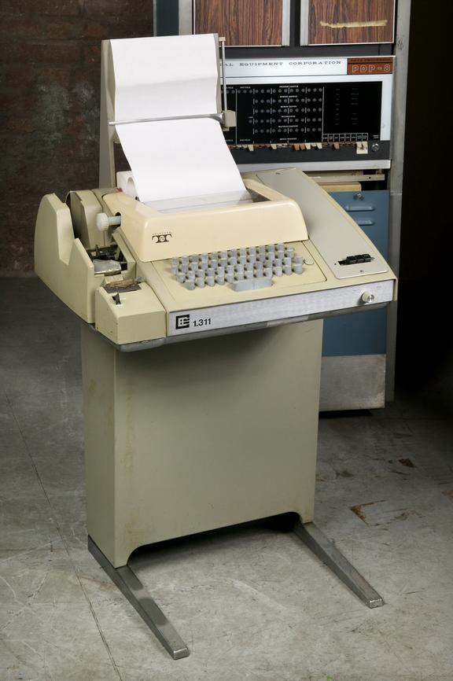
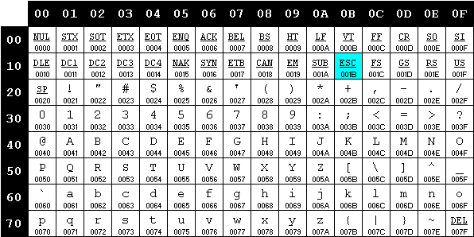
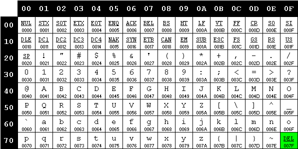
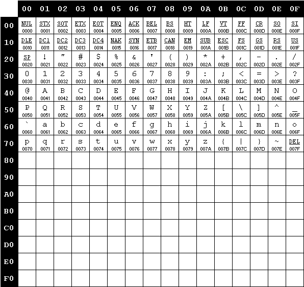
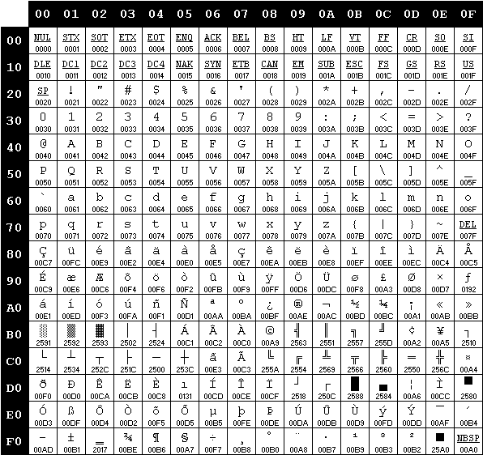
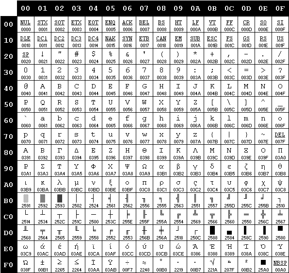
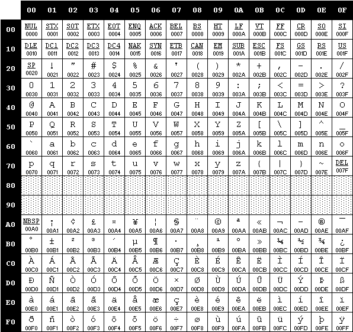
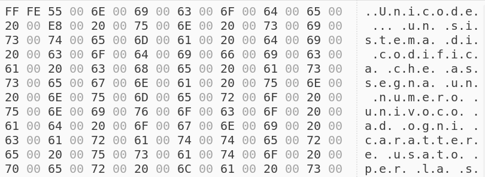

class: center, middle .title[Unicode] --- class: center, middle .title[1960] --- class: center, middle .title[IBM] --- class: center, middle  .illustration[ Teletype Model 33] --- class: center, middle .illustration[ Robert William Bemer (1920–2004)] --- class: center, middle <img src="img/ebcdic.jpg" height="480px"> .illustration[ Codifica EBCDIC (Extended Binary Coded Decimal Interchange Code)] --- class: center, middle .title[1961] --- class: center, middle .title[ASA] American Standards Association --- class: center, middle .title[ANSI] American National Standards Institute --- class: center, middle .title[1963] --- class: center, middle <img src="img/ascii_63.gif"> .illustration[ ASCII 1963] --- class: center, middle .title[1967] --- class: center, middle <img src="img/ascii_67.gif"> .illustration[ ASCII 1967] --- class: center, middle <img src="img/ascii_67_vs_63.gif"> .illustration[ ASCII 1967] --- class: center, middle  .illustration[ ASCII 1967] --- class: center, middle  .illustration[ ASCII 1967] --- .center[<img src="img/altair_basic.jpg">] > If a character was punched erroneously, punching out all seven bits caused this position to be ignored or deleted. .author[wikipedia.org ] --- class: center, middle .title[1981] --- class: center, middle .title[PC IBM] --- class: center, middle  .illustration[ Extended ASCII] --- class: center, middle <img src="img/cp437.gif" height="480px"> .illustration[ Extended ASCII] --- class: center, middle .title[Code page] --- class: center, middle <img src="img/cp437.gif" height="480px"> .illustration[ Code page OEM 437 “United States”] --- class: center, middle  .illustration[ Code page OEM 850 “Multilingual (Latin I)”] --- class: center, middle <img src="img/cp850_vs_cp437.gif" height="480px"> .illustration[ Code page OEM 850 “Multilingual (Latin I)”] --- class: center, middle  .illustration[ Code page OEM 737 “Greek II”] --- class: center, middle <img src="img/cp737_vs_cp437.gif" height="480px"> .illustration[ Code page OEM 737 “Greek II”] --- class: center, middle .title[1985] --- class: center, middle .title[Windows] --- class: center, middle <img src="img/windows-1252.gif" height="480px"> .illustration[ Code page ANSI Windows (1252)] --- class: center, middle  .illustration[ Code page ISO-8859-1 “Latin 1”] --- class: center, middle <img src="img/windows-1252_vs_iso-8859-1.gif" height="480px"> .illustration[ Code page ANSI Windows (1252)] --- class: center, middle .title[Mojibake] --- class: center ``` c a f f è ``` --- class: center ``` c a f f è [code page 850] ``` --- class: center ``` c a f f è ↓ ↓ ↓ ↓ ↓ 63 61 66 66 8A ``` --- class: center ``` 63 61 66 66 8A ``` --- class: center ``` 63 61 66 66 8A [code page 737] ``` --- class: center ``` 63 61 66 66 8A ↓ ↓ ↓ ↓ ↓ c a f f Λ ``` --- class: center, middle .example[ caffè ↔ caffΛ] --- class: center, middle .title[DBCS] .sub-title[ Double-Byte Character Set] --- class: center, middle .title[1987] --- class: center, middle .title[Unicode] --- # Unicode - stabilisce il set di caratteri - assegna un codice numerico univoco ad ogni carattere - definisce: - le regole di segmentazione e normalizzazione dei testi - i criteri di ordinamento di sequenze di caratteri - gli algoritmi per il trattamento dei testi bidirezionali - ... --- class: center, middle > Unicode is intended to address the need for a workable, reliable world text encoding. Unicode could be roughly described as "wide-body ASCII" that has been stretched to 16 bits to encompass the characters of all the world's living languages. In a properly engineered design, 16 bits per character are more than sufficient for this purpose. .author[ Unicode 88] --- class: center, middle .title[1991] --- class: center, middle .title[Unicode 1.0] --- class: center, middle > With over 30,000 unallocated character positions, the Unicode character encoding provides sufficient space for foreseeable future expansion. .author[ Unicode 1.0 – Introduction] --- class: center, middle .title[UCS] .sub-title[ Universal Character Set] --- # ISO/IEC 10646 - indipendente da Unicode - pubblicato nel 1990 - unità di codifica di 31 bit (679.477.248 caratteri) - UCS-4, UCS-2, UTF-1 --- class: center, middle .title[1993] --- # Unicode 2.0 - convergenza con ISO/IEC 10646 - set di caratteri comune - unità di codifica a 21 bit (1.112.064 caratteri) - UTF-32, UTF-16, UTF-8 --- class: center, middle <img src="img/unicode_evolution.png" height="480px"> .illustration[ fonte: Wikipedia] --- class: center, middle <img src="img/unicode_web.png" height="480px"> .illustration[ fonte: Google] --- # Definizioni - **character**: unità di testo (grafema) - **glyph**: forma grafica (glifo) - **codespace**: insieme di code point - **code point**: codice numerico (intero) univoco - **encoding**: rappresentazione binaria di un code point --- class: center, middle .example[ carattere ↔ code point ↔ configurazione binaria] --- # Carattere - **nome** -- - **categoria** .center[lettera, numero, simbolo, punteggiatura, separatore, …] --- # Carattere - **nome** - **categoria** - **altre caratteristiche** .center[alfabetico, spaziatura, ideogramma, carattere riservato, …] --- # Carattere - **nome** - **categoria** - **altre caratteristiche** - **aspetto** .center[larghezza, forma, bidirezionalità, specchiatura, …] --- # Carattere - **nome** - **categoria** - **altre caratteristiche** - **aspetto** - **caso** .center[maiuscolo, minuscolo, maiuscoletto, …] --- # Carattere - **categoria** - **altre caratteristiche** - **aspetto** - **caso** - **valore numerico** .center[decimale, esadecimale, frazione, numerale romano, …] --- # Carattere - **altre caratteristiche** - **aspetto** - **caso** - **valore numerico** - **sistema di scrittura** .center[generico, arabo, giapponese, braille, etrusco, cuneiforme, …] --- # Carattere - **aspetto** - **caso** - **valore numerico** - **sistema di scrittura** - **blocco** .center[“Basic Latin”, “Hiragana”, “Arrows”, “Box Drawing”, …] --- # Carattere - **caso** - **valore numerico** - **sistema di scrittura** - **blocco** - **proprietà di normalizzazione** --- # Carattere - **valore numerico** - **sistema di scrittura** - **blocco** - **proprietà di normalizzazione** - **età** --- # Carattere - **sistema di scrittura** - **blocco** - **proprietà di normalizzazione** - **età** - … --- # Code point - intervallo: .binary[000000÷10FFFF] - notazione: **U+«4÷6 cifre esadecimali»** -- .center[ .character[A] .codepoint[U+0041] .character-description[LATIN CAPITAL LETTER A]] --- # Code point - intervallo: .binary[000000÷10FFFF] - notazione: **U+«4÷6 cifre esadecimali»** .center[ .character[ε] .codepoint[U+03B5] .character-description[GREEK SMALL LETTER EPSILON]] --- # Code point - intervallo: .binary[000000÷10FFFF] - notazione: **U+«4÷6 cifre esadecimali»** .center[ .character[𐂀] .codepoint[U+10080] .character-description[LINEAR B IDEOGRAM B100 MAN]] --- # Piani |Piano|Intervallo |Descrizione |Abbreviazione| |:----|:--------------------:|:----------------------------------|:-----------:| |00 |.binary[000000÷00FFFF]|Basic Multilingual Plane |BMP | |01 |.binary[010000÷01FFFF]|Supplementary Multilingual Plane |SMP | |02 |.binary[020000÷02FFFF]|Supplementary Ideographic Plane |SIP | |03 |.binary[030000÷03FFFF]|Tertiary Ideographic Plane |TIP | |04-13|.binary[040000÷0DFFFF]|non assegnati |- | |14 |.binary[0E0000÷0EFFFF]|Supplementary Special-purpose Plane|SSP | |15 |.binary[0F0000÷0FFFFF]|Supplementary Private Use Area-A |- | |16 |.binary[100000÷10FFFF]|Supplementary Private Use Area-B |- | --- class: center, middle .title[UTF] .sub-sub-title[ Unicode/UCS Transformation Format] --- # UTF-32 - multi-byte - unità di codifica di 32 bit - lunghezza fissa (4 byte) - big e little-endianness --- # UTF-32 .center[ .character[A] .codepoint[U+0041] .character-description[LATIN CAPITAL LETTER A]] .center[ .codepoint[U+0041] → .binary[00000041]] --- # UTF-32 .center[ .character[ε] .codepoint[U+03B5] .character-description[GREEK SMALL LETTER EPSILON]] .center[ .codepoint[U+03B5] → .binary[000003B5]] --- # UTF-32 .center[ .character[𐂀] .codepoint[U+10080] .character-description[LINEAR B IDEOGRAM B100 MAN]] .center[ .codepoint[U+10080] → .binary[00010080]] --- # UTF-16 - multi-byte - unità di codifica di 16 bit - lunghezza variabile (2/4 byte) - big e little-endianness --- # UTF-16 .center[ .character[A] .codepoint[U+0041] .character-description[LATIN CAPITAL LETTER A]] .center[ .codepoint[U+0041] → .binary[0041]] --- # UTF-16 .center[ .character[ε] .codepoint[U+03B5] .character-description[GREEK SMALL LETTER EPSILON]] .center[ .codepoint[U+03B5] → .binary[03B5]] --- # UTF-16 .center[ .character[𐂀] .codepoint[U+10080] .character-description[LINEAR B IDEOGRAM B100 MAN]] .center[ .codepoint[U+10080] → .binary[????]] --- # Surrogati - code point non associati a un carattere - usati per codificare i caratteri dei piani 10÷16 - surrogati alti: .codepoint[U+D800]÷.codepoint[U+DBFF] - surrogati bassi: .codepoint[U+DC00]÷.codepoint[U+DFFF] --- # Algoritmo .center[ .codepoint[U+10080] - .binary[10000]] --- # Algoritmo .center[ .binary[10080] - .binary[10000] = .binary-1[00080]] --- # Algoritmo .center[ .binary-1[00080] .binary[&] .binary[FFFFF] = .binary-2[00080]] --- # Algoritmo .center[ .binary-2[00080] ↓ .binary[0000 0000 0000 1000 0000]] --- # Algoritmo .center[ .binary-2[00080] ↓ .binary-3[0000 0000 00].binary-4[00 1000 0000]] --- # Algoritmo .center[ .binary-2[00080] ↓ .binary-3[0000 0000 00] .binary-4[00 1000 0000]] --- # Algoritmo .center[ .binary[code point #1] = .binary[D800] .binary[|] .binary-3[0000000000] = .binary[D800] .binary[code point #2] = .binary[DC00] .binary[|] .binary-4[0010000000] = .binary[DC80]] .center[ .codepoint[U+10080] → .codepoint[U+D800] .codepoint[U+DC80]] --- # Algoritmo .important[ **un singolo code point espresso con due code point surrogati**] .center[ .codepoint[U+10080] → .codepoint[U+D800] .codepoint[U+DC80]] --- # Algoritmo .important[ **due code point per rappresentare un singolo carattere**] .center[ .codepoint[U+10080] → .codepoint[U+D800] .codepoint[U+DC80]] --- # UTF-8 - multi-byte - unità di codifica di 8 bit - lunghezza variabile (1÷4 byte) - non ha endianness --- # UTF-8 |Intervallo |Bits|Maschera | |:--------------------:|:--:|:-------------------------------------------| |.binary[000000÷00007F]| 7|.binary[0xxxxxxx ]| |.binary[000080÷0007FF]| 11|.binary[110xxxxx 10xxxxxx ]| |.binary[000800÷00FFFF]| 16|.binary[1110xxxx 10xxxxxx 10xxxxxx ]| |.binary[010000÷10FFFF]| 21|.binary[11110xxx 10xxxxxx 10xxxxxx 10xxxxxx]| --- # UTF-8 |Intervallo |Bits|Maschera | |:--------------------:|:--:|:-------------------------------------------| |.binary[000000÷00007F]| 7|.binary[0xxxxxxx ]| |.binary[000080÷0007FF]| 11|.binary[110xxxxx 10xxxxxx ]| |.binary[000800÷00FFFF]| 16|.binary[1110xxxx 10xxxxxx 10xxxxxx ]| |.binary[010000÷10FFFF]| 21|.binary[11110xxx 10xxxxxx 10xxxxxx 10xxxxxx]| .center[ .character[A] .codepoint[U+0041] .character-description[LATIN CAPITAL LETTER A]] .center[ .codepoint[U+0041] → .binary[41]] --- # UTF-8 |Intervallo |Bits|Maschera | |:--------------------:|:--:|:-------------------------------------------| |.binary[000000÷00007F]| 7|.binary[0xxxxxxx ]| |.binary[000080÷0007FF]| 11|.binary[110xxxxx 10xxxxxx ]| |.binary[000800÷00FFFF]| 16|.binary[1110xxxx 10xxxxxx 10xxxxxx ]| |.binary[010000÷10FFFF]| 21|.binary[11110xxx 10xxxxxx 10xxxxxx 10xxxxxx]| .center[ .character[ε] .codepoint[U+03B5] .character-description[GREEK SMALL LETTER EPSILON]] .center[ .codepoint[U+03B5] → .binary[CE] .binary[B5]] --- # UTF-8 |Intervallo |Bits|Maschera | |:--------------------:|:--:|:-------------------------------------------| |.binary[000000÷00007F]| 7|.binary[0xxxxxxx ]| |.binary[000080÷0007FF]| 11|.binary[110xxxxx 10xxxxxx ]| |.binary[000800÷00FFFF]| 16|.binary[1110xxxx 10xxxxxx 10xxxxxx ]| |.binary[010000÷10FFFF]| 21|.binary[11110xxx 10xxxxxx 10xxxxxx 10xxxxxx]| .center[ .character[𐂀] .codepoint[U+10080] .character-description[LINEAR B IDEOGRAM B100 MAN]] .center[ .codepoint[U+03B5] → .binary[F0] .binary[90] .binary[82] .binary[80]] --- class: center, middle .title[BOM] .sub-title[ Byte Order Mark] --- class: center, middle .codepoint[U+10080] → .codepoint[U+D800] .codepoint[U+DC80] --- class: center, middle .codepoint[U+10080] → .binary-1[D800] .binary-2[DC80] -- .binary-1[D8] .binary-1[00] .binary-2[DC] .binary-2[80] .binary-1[00] .binary-1[D8] .binary-2[80] .binary-2[DC] --- class: center, middle .codepoint[U+10080] → .binary-1[D800] .binary-2[DC80] .binary-1[D8] .binary-1[00] .binary-2[DC] .binary-2[80] ⇠ big endian (**BE**) .binary-1[00] .binary-1[D8] .binary-2[80] .binary-2[DC] ⇠ little endian (**LE**) --- # BOM - .codepoint[U+FEFF] .character-description[ZERO WIDTH NO-BREAK SPACE] - di fatto invisibile - valido solo in testa ad una sequenza Unicode - usato come <em>word joiner</em> pre-Unicode 3.2, ora c'è .codepoint[U+2060] - opzionale, default: **BE** --- # BOM |Codifica|Sequenza binaria | |:-------|:----------------------------------------------| |UTF-32BE|.binary[00] .binary[00] .binary[FE] .binary[FF]| |UTF-32LE|.binary[FF] .binary[FE] .binary[00] .binary[00]| |UTF-16BE|.binary[FE] .binary[FF] | |UTF-16LE|.binary[FF] .binary[FE] | |UTF-8 |.binary[EF] .binary[BB] .binary[BF] | --- class: center, middle  .illustration[ Testo UTF-16LE (con BOM)] --- class: center, middle <img src="img/text_utf8.png"> .illustration[ Testo UTF-8 (senza BOM)] --- class: center, middle .title[Equivalenza] --- # Grafemi e glifi Relazione non biunivoca -- - legature: .center[ fi → f + i st → s + t] --- # Grafemi e glifi Relazione non biunivoca - legature (un glifo, più grafemi) -- - combinazioni di caratteri --- # Combinazioni - carattere precomposto (comprende tutti i glifi): .center[ .character[è] .codepoint[U+00E8]] -- - carattere combinato (a partire dai singoli glifi): .center[ .character[e] .codepoint[U+0065] .character[◌̀] .codepoint[U+0300]] --- # Zalgo text .example[ caffè] --- # Zalgo text .example[ c̵a̸f̵f̶è̶] --- # Zalgo text .example[ c̶̙̩͗̏̉̌ͅa̵͍̠̟̓͂f̸̟̲͎̀̈́͐́͜f̴͓̭͎͖̿̔͘̚è̸̢͚̫́͝] --- # Zalgo text .example[ c̵̻̩̟̝̰͕̬͈͕̠͙͎̩̿̋̾̀͒̎̀̆̽̕͘̕͜͝͠͝á̶̧̢͙̥̳̙̟̲͉̰͖̲͈̭̮̰͉̝̌̍̈́͋͆̃̚f̶̢̨͓̲̟̲͚̼͚̟̮͙̼́͊̀̂̐̀͒̑͛̏͐͊̍͝ͅf̴̙͍̮̒͆͒̿͑̅̄̕̚͝ͅͅè̴̢̡̡̛̗̳͎̮̥͉̃͆̑] -- .important[ 121 code point] --- # Zalgo text .example[ c̵̻̩̟̝̰͕̬͈͕̠͙͎̩̿̋̾̀͒̎̀̆̽̕͘̕͜͝͠͝á̶̧̢͙̥̳̙̟̲͉̰͖̲͈̭̮̰͉̝̌̍̈́͋͆̃̚f̶̢̨͓̲̟̲͚̼͚̟̮͙̼́͊̀̂̐̀͒̑͛̏͐͊̍͝ͅf̴̙͍̮̒͆͒̿͑̅̄̕̚͝ͅͅè̴̢̡̡̛̗̳͎̮̥͉̃͆̑] .important[ dove termina un carattere e inizia il successivo?] --- # Grafemi e glifi Relazione non biunivoca - legature (un glifo, più grafemi) - combinazioni di caratteri (un grafema, più glifi) Come determinare l'equivalenza di due sequenze Unicode? --- # Equivalenza canonica >Caratteri o sequenze di caratteri che rappresentano lo stesso simbolo astratto e graficamente indistinguibili. --- # Equivalenza canonica .center[ .character[è] .codepoint[U+00E8] .relation[≡] .character[e] .codepoint[U+0065] .character[◌̀] .codepoint[U+0300]] - .character[è] .codepoint[U+00E8] .character-description[LATIN SMALL LETTER E WITH GRAVE] - .character[e] .codepoint[U+0065] .character-description[LATIN SMALL LETTER E] - .character[◌̀] .codepoint[U+0300] .character-description[COMBINING GRAVE ACCENT] --- # Equivalenza canonica ternaria .center[ .character[Å] .codepoint[U+00C5] .relation[≡] .character[A] .codepoint[U+0041] .character[◌̊] .codepoint[U+030A] .relation[≡] .character[Å] .codepoint[U+212B]] - .character[Å] .codepoint[U+00C5] .character-description[LATIN CAPITAL LETTER A WITH RING ABOVE] - .character[A] .codepoint[U+0041] .character-description[LATIN CAPITAL LETTER A] - .character[◌̊] .codepoint[U+030A] .character-description[COMBINING RING ABOVE] - .character[Å] .codepoint[U+212B] .character-description[ANGSTROM SIGN] --- # Compatibilità >Caratteri o sequenze di caratteri che rappresentano lo stesso simbolo astratto ma distinti per forma o altre caratteristiche. --- # Compatibilità .center[ .character[fi] .codepoint[U+FB01] .relation[∼] .character[f] .codepoint[U+0066] .character[i] .codepoint[U+0069]] - .character[fi] .codepoint[U+FB01] .character-description[LATIN SMALL LIGATURE FI] - .character[f] .codepoint[U+0066] .character-description[LATIN SMALL LETTER F] - .character[i] .codepoint[U+0069] .character-description[LATIN SMALL LETTER I] --- # Compatibilità .center[ .character[①] .codepoint[U+2460] .relation[∼] .character[1] .codepoint[U+0031]] - .character[①] .codepoint[U+2460] .character-description[CIRCLED DIGIT ONE] - .character[1] .codepoint[U+0031] .character-description[DIGIT ONE] --- # Compatibilità .center[ .character[₃] .codepoint[U+2083] .relation[∼] .character[3] .codepoint[U+0033]] - .character[₃] .codepoint[U+2083] .character-description[SUBSCRIPT THREE] - .character[3] .codepoint[U+0033] .character-description[DIGIT THREE] --- # Normalizzazione - Normalization Form Canonical Decomposition (**NFD**) - Normalization Form Canonical Composition (**NFC**) - Normalization Form Compatibility Decomposition (**NFKD**) - Normalization Form Compatibility Composition (**NFKC**) --- # Capitalizzazione .center[ .character[fi] .codepoint[U+FB01] .relation[⤢] .character[F] .codepoint[U+0046] .character[I] .codepoint[U+0049]] - .character[fi] .codepoint[U+FB01] .character-description[LATIN SMALL LIGATURE FI] - .character[F] .codepoint[U+0046] .character-description[LATIN CAPITAL LETTER F] - .character[I] .codepoint[U+0049] .character-description[LATIN CAPITAL LETTER I] --- # Capitalizzazione .center[ .character[ß] .codepoint[U+00DF] .relation[⤢] .character[S] .codepoint[U+0053] .character[S] .codepoint[U+0053]] - .character[ß] .codepoint[U+00DF] .character-description[LATIN SMALL LETTER SHARP S] - .character[S] .codepoint[U+0053] .character-description[LATIN CAPITAL LETTER S] --- # Capitalizzazione .center[ .character[ẗ] .codepoint[U+1E97] .relation[⤢] .character[T] .codepoint[U+0054] .character[◌̈] .codepoint[U+0308]] - .character[ẗ] .codepoint[U+1E97] .character-description[LATIN SMALL LETTER T WITH DIAERESIS] - .character[T] .codepoint[U+0054] .character-description[LATIN CAPITAL LETTER T] - .character[◌̈] .codepoint[U+0308] .character-description[COMBINING DIAERESIS] --- # Capitalizzazione .center[ .character[ς] .codepoint[U+03C2] .relation[⤢] .character[Σ] .codepoint[U+03A3]] .center[ .character[σ] .codepoint[U+03C3] .relation[⤢] .character[Σ] .codepoint[U+03A3]] - .character[ς] .codepoint[U+03C2] .character-description[GREEK SMALL LETTER FINAL SIGMA] - .character[σ] .codepoint[U+03C3] .character-description[GREEK SMALL LETTER SIGMA] - .character[Σ] .codepoint[U+03A3] .character-description[GREEK CAPITAL LETTER SIGMA] --- # Capitalizzazione .center[ .character[i] .codepoint[U+0069] .relation[⤢] .character[I] .codepoint[U+0049]] .center[ .character[i] .codepoint[U+0069] .relation[⤢] .character[İ] .codepoint[U+0130]] - .character[i] .codepoint[U+0069] .character-description[LATIN SMALL LETTER I] - .character[I] .codepoint[U+0049] .character-description[LATIN CAPITAL LETTER I] - .character[İ] .codepoint[U+0130] .character-description[LATIN CAPITAL LETTER I WITH DOT ABOVE] --- class: center, middle .title[Mojibake] --- class: center ``` c a f f è ``` --- class: center ``` c a f f è [UTF-8] ``` --- class: center ``` c a f f è ↓ ↓ ↓ ↓ ↓ 63 61 66 66 C3 A8 ``` --- class: center ``` 63 61 66 66 C3 A8 ``` --- class: center ``` 63 61 66 66 C3 A8 [code page Windows 1252] ``` --- class: center ``` 63 61 66 66 C3 A8 ↓ ↓ ↓ ↓ ↓ ↓ c a f f à ¨ ``` --- class: center, middle .example[ caffè ↔ caffè] --- class: center ``` c a f f è ``` --- class: center ``` c a f f è [code page Windows-1252] ``` --- class: center ``` c a f f è ↓ ↓ ↓ ↓ ↓ 63 61 66 66 E8 ``` --- class: center ``` 63 61 66 66 E8 ``` --- class: center ``` 63 61 66 66 E8 [UTF-8] ``` --- class: center ``` 63 61 66 66 E8 ↓ ↓ ↓ ↓ ↓ c a f f � ``` --- class: center, middle .example[ caffè ↔ caff�] --- # Replacement character .center[ .character[�] .codepoint[U+FFFD] .character-description[replacement character]] - sostituisce code point invalidi - sostituisce code point sconosciuti --- class: center, middle .title[Conclusioni] --- # Punti principali - carattere ↔ code point ↔ configurazione binaria --- # Punti principali - carattere ↔ code point ↔ configurazione binaria .center[ .character[A] .codepoint[U+0041] .character-description[LATIN CAPITAL LETTER A]] .codepoint[U+0041] → .binary[00000041] (UTF-32) .codepoint[U+0041] → .binary[0041] (UTF-16) .codepoint[U+0041] → .binary[41] (UTF-8) --- # Punti principali - carattere ↔ code point ↔ configurazione binaria .center[ .character[ε] .codepoint[U+03B5] .character-description[GREEK SMALL LETTER EPSILON]] .codepoint[U+03B5] → .binary[000003B5] (UTF-32) .codepoint[U+03B5] → .binary[03B5] (UTF-16) .codepoint[U+03B5] → .binary[CE] .binary[B5] (UTF-8) --- # Punti principali - carattere ↔ code point ↔ configurazione binaria .center[ .character[𐂀] .codepoint[U+10080] .character-description[LINEAR B IDEOGRAM B100 MAN]] .codepoint[U+10080] → .binary[00010080] (UTF-32) .codepoint[U+10080] → .binary[D800] .binary[DC80] (UTF-16) .codepoint[U+10080] → .binary[F0] .binary[90] .binary[82] .binary[80] (UTF-8) --- # Punti principali - carattere ↔ code point ↔ configurazione binaria - attenzione nella manipolazione di sequenze unicode -- .warning[ UTF-16 in particolare] --- # Punti principali - carattere ↔ code point ↔ configurazione binaria - attenzione nella manipolazione di sequenze unicode .center[ .character[𐂀] .codepoint[U+10080] .character-description[LINEAR B IDEOGRAM B100 MAN]] --- # Punti principali - carattere ↔ code point ↔ configurazione binaria - attenzione nella manipolazione di sequenze unicode .center[ .codepoint[U+10080] → .codepoint[U+D800] .codepoint[U+DC80] → .binary[D8] .binary[00] .binary[DC] .binary[80]] --- # Punti principali - carattere ↔ code point ↔ configurazione binaria - attenzione nella manipolazione di sequenze unicode .center[ .codepoint[U+10080] → .codepoint[U+D800] .codepoint[U+DC80] → .binary[D8] .binary[00] .binary[DC] .binary[80]] .center[ `strlen`?] --- # Punti principali - carattere ↔ code point ↔ configurazione binaria - attenzione nella manipolazione di sequenze unicode .warning[ endianness] --- # Punti principali - carattere ↔ code point ↔ configurazione binaria - attenzione nella manipolazione di sequenze unicode .center[ .codepoint[U+10080] → .codepoint[U+D800] .codepoint[U+DC80]] .center[ Big endian (**BE**) → .binary[D8] .binary[00] .binary[DC] .binary[80]] .center[ Little endian (**LE**) → .binary[00] .binary[D8] .binary[80] .binary[DC]] --- # Punti principali - carattere ↔ code point ↔ configurazione binaria - attenzione nella manipolazione di sequenze unicode .warning[ trasformazioni dipendenti dal contesto] --- # Punti principali - carattere ↔ code point ↔ configurazione binaria - attenzione nella manipolazione di sequenze unicode .center[ `strcmp`, `sort`, `to_upper`/`to_lower`, …] --- # Punti principali - carattere ↔ code point ↔ configurazione binaria - attenzione nella manipolazione di sequenze unicode .warning[ segmentazione del testo] --- # Punti principali - carattere ↔ code point ↔ configurazione binaria - attenzione nella manipolazione di sequenze unicode .center[ `character_count`, `word_wrap`, `next_sentence`, …] --- # Punti principali - carattere ↔ code point ↔ configurazione binaria - attenzione nella manipolazione di sequenze unicode - BOM (opzionale) nei flussi binari --- # Punti principali - carattere ↔ code point ↔ configurazione binaria - attenzione nella manipolazione di sequenze unicode - BOM (opzionale) nei flussi binari .center[ .codepoint[U+FEFF] .character-description[ZERO WIDTH NO-BREAK SPACE]] --- # Punti principali - carattere ↔ code point ↔ configurazione binaria - attenzione nella manipolazione di sequenze unicode - BOM (opzionale) nei flussi binari .center[ .codepoint[U+FEFF] .character-description[ZERO WIDTH NO-BREAK SPACE] .binary[00] .binary[00] .binary[FE] .binary[FF] ⇢ **UTF-32BE** .binary[FF] .binary[FE] .binary[00] .binary[00] ⇢ **UTF-32LE**] --- # Punti principali - carattere ↔ code point ↔ configurazione binaria - attenzione nella manipolazione di sequenze unicode - BOM (opzionale) nei flussi binari .center[ .codepoint[U+FEFF] .character-description[ZERO WIDTH NO-BREAK SPACE] .binary[FE] .binary[FF] ⇢ **UTF-16BE** .binary[FF] .binary[FE] ⇢ **UTF-16LE**] --- # Punti principali - carattere ↔ code point ↔ configurazione binaria - attenzione nella manipolazione di sequenze unicode - BOM (opzionale) nei flussi binari .center[ .codepoint[U+FEFF] .character-description[ZERO WIDTH NO-BREAK SPACE] .binary[EF] .binary[BB] .binary[BF] ⇢ **UTF-8**] --- # Punti principali - carattere ↔ code point ↔ configurazione binaria - attenzione nella manipolazione di sequenze unicode - BOM (opzionale) nei flussi binari - copertura parziale (diversa) nei vari font -- .example[ caffè → caff□] --- # Punti principali - carattere ↔ code point ↔ configurazione binaria - attenzione nella manipolazione di sequenze unicode - BOM (opzionale) nei flussi binari - copertura parziale (diversa) nei vari font - mojibake -- .example[ caffè ↔ caffè ↔ caff�] --- # Consigli - non farsi ingannare dalle apparenze - non dare nulla per scontato - affidarsi a librerie di terze parti di qualità (**ICU**) - [unicode.org](https://home.unicode.org/) - [codepoints.net](https://codepoints.net/) --- # Quesito finale ```python >>> int("৪୨") ?? ``` --- # Quesito finale ```python >>> int("৪୨") 42 ``` -- - .character[৪] .codepoint[U+09EA] .character-description[BENGALI DIGIT FOUR] - .character[୨] .codepoint[U+0B68] .character-description[ORIYA DIGIT TWO] ---